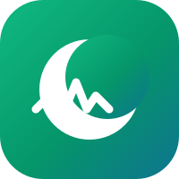
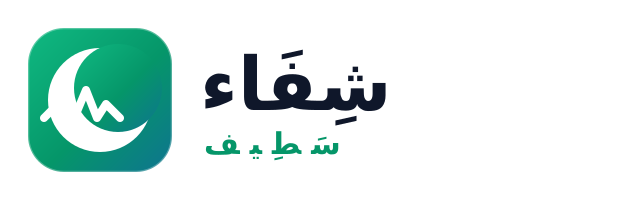

الدليل الرسمي للشعار، الألوان، الخطوط، وقواعد الاستخدام — ولاية سطيف 2026
يجمع الشعار بين الصليب الطبي وخط نبض القلب — رمز الشفاء والحياة. النسخة الملونة للاستخدام العام، والأحادية للطباعة والخلفيات الداكنة.

الأخضر الزمردي = الصحة والثقة. الأزرق السماوي = الهدوء الطبي. مستمدة من هوية المنصة الحالية.
#059669#10B981#047857#0284C7#38BDF8#0F172A#F59E0B#EF4444خطوط عربية حديثة تدعم التشكيل بوضوح — مجانية من Google Fonts.
للحفاظ على قوة العلامة في كل ظهور.